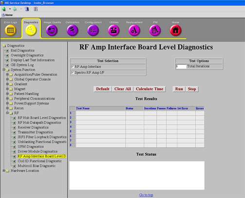
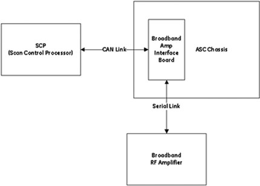

Proprietary to General Electric Company
Direction 5670006, Rev# 1
Discovery MR750w GEM Service Methods
Module Version 1.0, Version Date 4/8/09
Proprietary to General Electric Company |
Illustration 1 shows the access to the Spectro RF Amplifier Interface Board Diagnostics: Diagnostics >> System Function >> RF >> RF Amp Interface Board Level Diagnostics or
Diagnostics >> Hardware Location >> PGR Cabinet >> RF >> RF Amp Interface Board Level Diagnostics
Illustration 1: RF Amp Interface Board Level Diagnostics Screen

This diagnostic verifies that the SCP can communicate via CAN with the broadband RF Amplifier Interface (IF) Board in the ASC Chassis. It also verifies that the IF Board can communicate with and control the spectroscopy/broadband RF Amplifier via the serial link between the broadband RF Amplifier IF Board and the broadband RF Amplifier. It does not test the actual RF Amplifier, only its control and monitoring functionality.
The following components are tested:
Broadband (Spectro) RF Amplifier Interface Board
Broadband (Spectro) RF Amplifier State/Mode Operation
This diagnostic will be listed on the RF Amp Interface Board Level Diagnostics screen shown in Illustration 1 only if the system is configured for Spectroscopy: specRFamp = yes in MRconfig.cfg file.
See Illustration 2 for the diagnostic path used by the Spectro RF Amp IF Board diagnostics.
Illustration 2: Block Diagram of Spectro RF Amp IF Board Diagnostics

To access the RF Amplifier IF Board Diagnostics:
Click the Diagnostics icon, select System Function => RF to display the RF Amp Interface Board Level Diagnostics screen shown in Illustration 1.
Select the Spectro RF Amp I/F test, and click [Run].
This diagnostic does the following:
Checks the serial cable link between the Broadband (Spectro) RF Amp IF Board and the Broadband RF Amplifier. If this cable is missing, the test fails.
If the serial link is present, the SCP commands the RF Amplifier to the STANDBY state.
Once the RF Amplifier successfully transitions to STANDBY state, the SCP commands the RF Amplifier to the OPERATE state.
| NOTE: | Once the RF Amp successfully transitions to the OPERATE state, the diagnostics is completed. |
Ensure that the diagnostic passed by reviewing the status in the Test Results table shown in Illustration 1. If the diagnostic fails, review the error log and the corresponding extended error message for subsequent actions. In the event that the diagnostic reports a time-out, the diagnostic may not have been executed. Re-execute the test. If it continues to time out, perform a TPS Reset, and perform the diagnostic again.